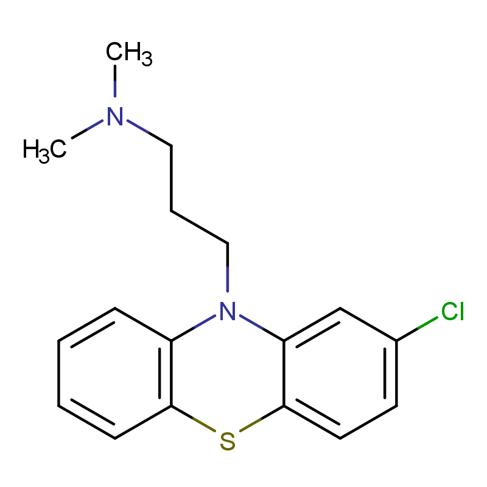
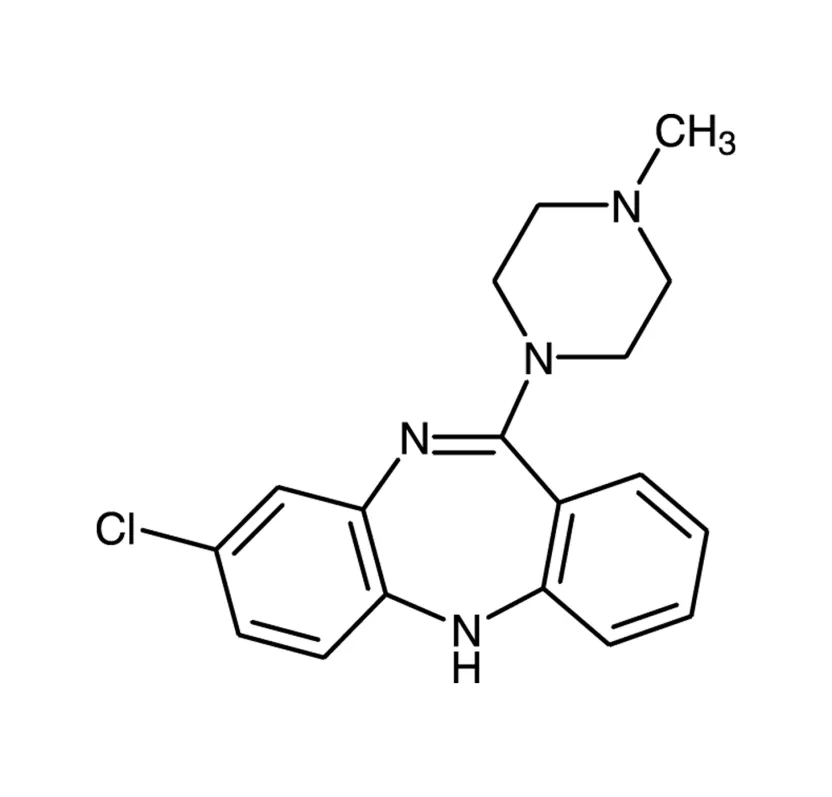

El Clorpromazina y la Clozapina atraviesan la barrera hematoencefálica y actúan modulando la neurotransmisión de la Dopamina en diferentes vías del sistema nervioso central.
Ambos fármacos se unen de forma competitiva a los receptores dopaminérgicos D2, los cuales están acoplados a proteínas Gi. En condiciones normales, cuando la dopamina se une a estos receptores, se inhibe la adenilato ciclasa, lo que disminuye los niveles de AMPc y modula la actividad neuronal.
Al bloquear los receptores D2, la clorpromazina y la clozapina impiden la acción inhibitoria de la dopamina sobre la adenilato ciclasa, lo que resulta en un aumento relativo del AMPc intracelular y una alteración en la señalización neuronal. Este efecto es clave en la vía mesolímbica, donde reduce la hiperactividad dopaminérgica responsable de los síntomas psicóticos.
La clorpromazina produce un bloqueo intenso y poco selectivo de D2, afectando múltiples vías dopaminérgicas (mesolímbica, nigroestriada, tuberoinfundibular), lo que explica tanto su efecto terapéutico como la aparición de efectos extrapiramidales.
La clozapina, en cambio, tiene menor afinidad por D2 y además antagoniza los receptores serotoninérgicos 5-HT2A. Este bloqueo serotoninérgico favorece la liberación de dopamina en ciertas vías (como la nigroestriada), compensando parcialmente el bloqueo D2 y modulando de forma más equilibrada la neurotransmisión dopaminérgica.
Como consecuencia, mientras ambos reducen la señal dopaminérgica mesolímbica, la clozapina preserva mejor la función dopaminérgica en otras vías, disminuyendo efectos adversos motores.
Como resultado final, ambos actúan como antagonistas D2 acoplados a Gi, bloquean la inhibición de la adenilato ciclasa, aumentan AMPc y reducen la hiperactividad dopaminérgica, con la clorpromazina siendo menos selectiva y la clozapina modulando adicionalmente el sistema serotoninérgico para un efecto más equilibrado.
El Clorpromazina y la Clozapina son antagonistas de los receptores dopaminérgicos D2, los cuales están acoplados a proteína Gi. Normalmente, la Dopamina al unirse a estos receptores disminuye el AMPc; sin embargo, estos fármacos bloquean esa acción, lo que altera la señalización dopaminérgica y reduce la hiperactividad en la vía mesolímbica, mejorando síntomas psicóticos como alucinaciones y delirios.
La diferencia es que la clorpromazina bloquea los receptores D2 de forma más intensa y poco selectiva en varias vías, lo que puede causar efectos motores, mientras que la clozapina bloquea menos D2 y además antagoniza receptores 5-HT2A, lo que modula la liberación de dopamina y mantiene un mejor equilibrio. Ambos reducen la actividad dopaminérgica, pero la clozapina lo hace de forma más controlada y con menos efectos extrapiramidales.
Audio explicativo
Material visual

